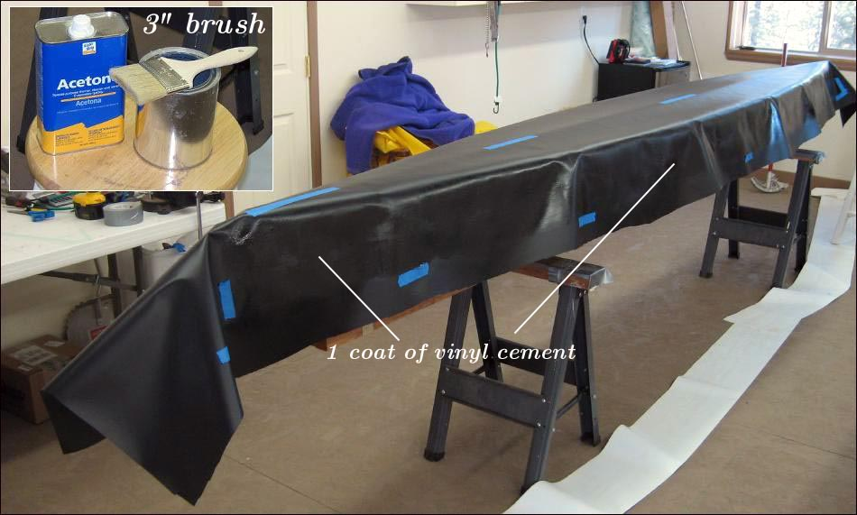

| Sonnet ( Hull Skin) | Menu Last Page Next Page |
|

Apply 1 coat of Vinyl cement in an area extending from the bottom of the chines to the top of the gunwales, and forward / aft to the end of the sonnet sleeves. This will correspond to the glue area of the sponson sleeves. An inexpensive 3" (76mm) brush works well for this application.
|
|